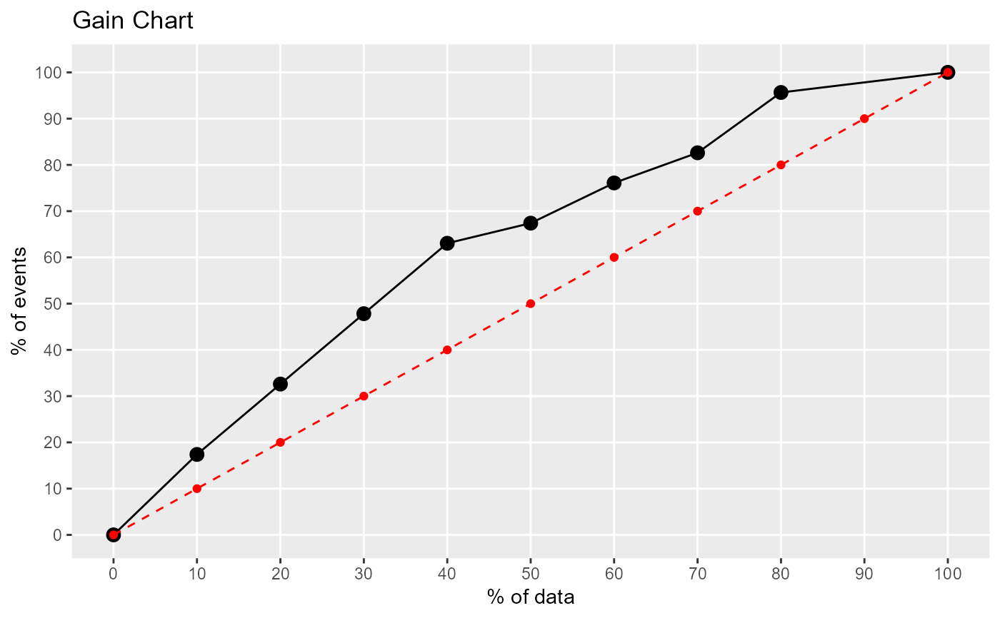
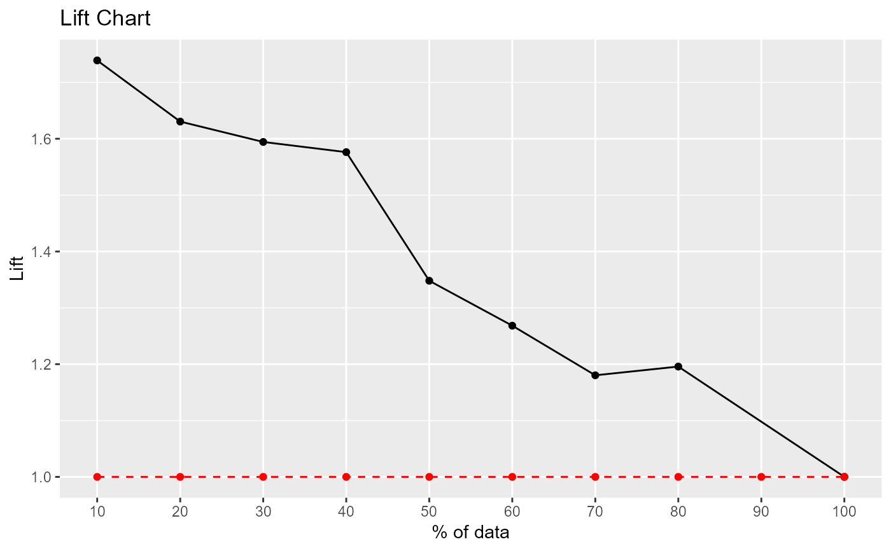

lift_plot.RdCreate lift and gain charts for binary classification problems
lift_plot(actual, prob, positive = "yes")actual class.
predicted probability of target class.
which class is the target class?
a data frame with lift and gain values for each decile.
# logistic regression example
fit <- glm(caesarian ~ ., family=binomial, data = caesarian)
pred <- predict(fit, newdata=caesarian, type="response")
results <- lift_plot(caesarian$caesarian, pred, positive="yes")


print(results)
#> decile ncases nresp cumresp pctevents gain cumlift
#> 1 10 8 8 8 17.39 17.39 1.739000
#> 3 20 8 7 15 15.22 32.61 1.630500
#> 4 30 8 7 22 15.22 47.83 1.594333
#> 5 40 8 7 29 15.22 63.05 1.576250
#> 6 50 8 2 31 4.35 67.40 1.348000
#> 7 60 8 4 35 8.70 76.10 1.268333
#> 8 70 8 3 38 6.52 82.62 1.180286
#> 9 80 8 6 44 13.04 95.66 1.195750
#> 2 100 8 2 46 4.35 100.01 1.000100